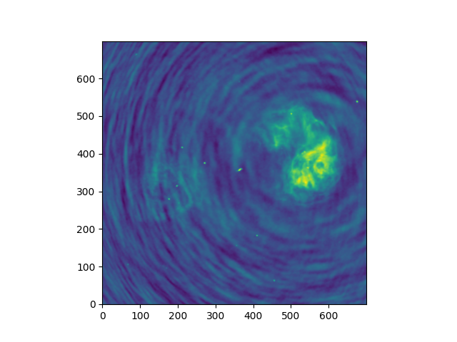
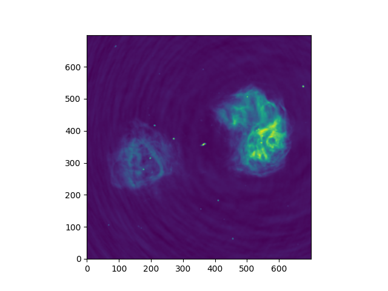
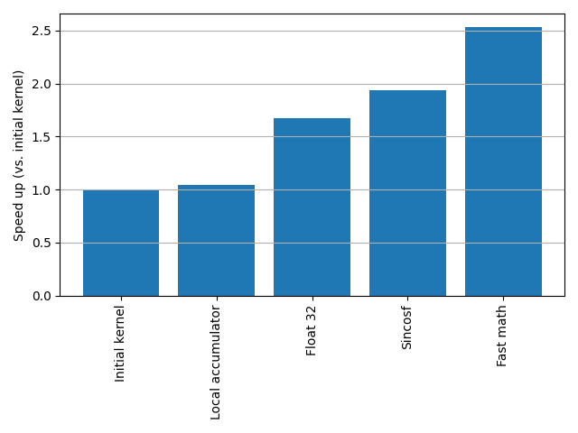
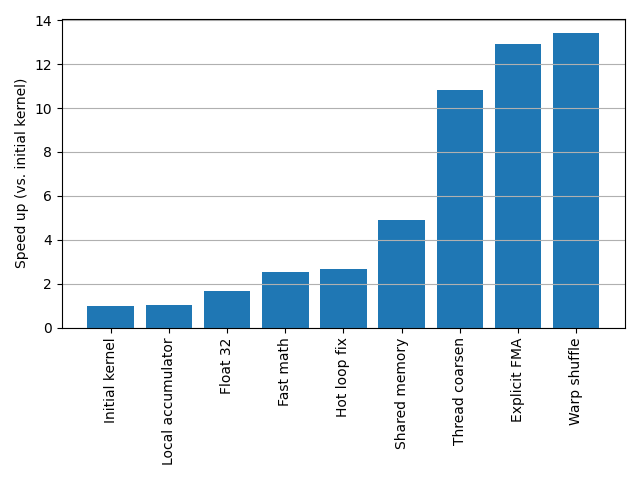

Optimisation
Last updated on 2026-06-16 | Edit this page
Overview
Questions
- What are the main bottlenecks in GPU performance?
- How do Warp Shuffles improve on Shared Memory?
Objectives
- Identify and fix Memory Coalescing issues.
- Use Fused Multiply-Add (FMA) for performance and precision.
- Implement a complex kernel using shfl_sync for warp-level communication.
A toy problem
We’re going to start with a toy problem: imaging radio interferometry data. In other domains, this is also known as a non-uniform Fourier transform: we transform from an irregularly sampled 3D visibility space to a 2D surface within the imaging space.
An important non-aim: we are not looking to make algorithmic improvements. Real-world imaging software rarely performs a full direct Fourier transform since it is so costly, but those alternative algorithms are more complex and are not our focus here.
The discrete imaging equation is defined as follows:
\[ V(l, m) = \sum V(u, v, w) e^{2 \pi i (u l + v m + w [n - 1])} \\ \textrm{where} \quad n = \sqrt{1 - l^2 - m^2} \]
The dimensions \(l\) and \(m\) span the image domain, whilst the \(u, v, w\) coordinates span the (sparse and unevenly sampled) visibility domain. We are prohibited from treating this as a simple 2D fast Fourier transform problem due to two main factors: u, v, w are not even sampled; and the so-called \(w\) term is non-negligible.
Image sizes are typically thousands of pixels by thousands of pixels; whilst visibility data is similarly millions of rows in length.
By the end, we hope to be able to image the large radio lobes of Fornax A from the raw visibility data.
A first implementation
As always, we will approach this first on the CPU where we can ensure we first make things right before attempting a first pass at a kernel.
Let’s first set things up. Our data is stored in the file visibilities.npz
and we will extract each datum and its associated baseline
coordinates:
PYTHON
data = np.load("visibilities.npz")
us, vs, ws, vis = data["u"], data["v"], data["w"], data["data"]Next we will set up our imaging grid. We will image a 700 x 700 pixel grid. We will set the scale such that \(\Delta l = \Delta m = 10^{-4}\) (this scale is somewhat arbitrary but is chosen to the main radio feature within the image).
Finally, we will precompute the associated values \(n' = n - 1 = \sqrt{1 - l^2 - m^2} - 1\):
Challenge
Using numba’s njit and prange functions,
attempt to write an CPU-parallel implementation of the direct imaging
equation. Ask yourself: what is the unit of parallelisation?
Using matplotlib’s imshow(), save a figure of the real
components of the image.
Note: below we reduce the data by 50x to speed things up. If things take too long for you, try reducing the data even more aggressively.
PYTHON
@njit(parallel=True)
def image_numba(us, vs, ws, data, ls, ms, ndashes, img):
pass
# TODO
data = np.load("visibilities.npz")
us, vs, ws, data = data["u"], data["v"], data["w"], data["data"]
lpx, mpx = np.mgrid[-350:350, -350:350]
ls, ms = lpx * 0.0005, mpx * 0.0005
ndashes = np.sqrt(1 - ls**2 - ms**2) - 1
# For now, reduce data by 50x since CPU is too slow
us, vs, ws, data = us[::50], vs[::50], ws[::50], data[::50]
img = np.zeros(ls.shape, dtype=complex)
image_numba(us, vs, ws, data, ls, ms, ndashes, img)
plt.imshow(img.real, origin="lower")
plt.savefig("output.png")We parallelise over each pixel which, for a 700 x 700 pixel image, gives us just shy of 500,000 threads. And since each pixel is its own independent sum, we don’t have to worry about race conditions.
PYTHON
@njit(parallel=True)
def image_numba(us, vs, ws, data, ls, ms, ndashes, img):
# Parallelise over each output pixel
for lmpx in prange(ls.size):
# Convert 1D to 2D pixel index
lpx, mpx = lmpx // ls.shape[1], lmpx % ls.shape[1]
# Retrieve l, m and ndash coordinates associated with this pixel
l, m, ndash = ls[lpx, mpx], ms[lpx, mpx], ndashes[lpx, mpx]
# Perform the sum for this one pixel over all of the visibility data
for u, v, w, datum in zip(us, vs, ws, data):
phase = 2 * np.pi * (u * l + v * m + w * ndash)
img[lpx, mpx] += datum * np.exp(1j * phase)Even with only a fifthieth of the data we start to see something resembling the radio lobes:

Challenge
Now that we have a working CPU version, the next step is to extract the inner loop as a standalone kernel and configure an associated grid to work on the GPU.
Try implementing a simple GPU kernel implementation using the
@numba.cuda decorator.
Note: As with the DFT function we have worked on earlier, you will need to rewrite the imaginary exponential using the identity \(e^{i \phi} = \cos{\phi} + i \sin{\phi}\).
The implementation is very similar to that used in Numba’s prange loop. Some points of note:
- We have chosen here to retain a linear index for simplicity. Additionally, in the case where the image dimensions don’t match an even multiple of the threads per block, the 1D grid minimises the amount of threads that “overflow”.
- We have rewritten the imaginary exponential as a combination of
cos()andsin().
PYTHON
@cuda.jit
def kernel(us, vs, ws, data, ls, ms, ndashes, img):
lmpx = cuda.grid(1)
if lmpx < img.size:
lpx, mpx = divmod(lmpx, ls.shape[1])
# Retrieve l, m and ndash coordinates associated with this pixel
l, m, ndash = ls[lpx, mpx], ms[lpx, mpx], ndashes[lpx, mpx]
# Perform sum over all of the visibility data for just one pixel
for u, v, w, datum in zip(us, vs, ws, data):
phase = 2 * np.pi * (u * l + v * m + w * ndash)
img[lpx, mpx] += datum * complex(math.cos(phase), math.sin(phase))We can benchmark this code using the following harness:
PYTHON
# Load the visibility data
data = np.load("visibilities.npz")
us, vs, ws, data = data["u"], data["v"], data["w"], data["data"]
# Initialise the image grid and the corresponding l, m and ndash coordinates
lpx, mpx = np.mgrid[-350:350, -350:350]
ls, ms = lpx * 0.0005, mpx * 0.0005
ndashes = np.sqrt(1 - ls**2 - ms**2) - 1
# Transfer data to the GPU
img_d = cupy.zeros(ls.shape, dtype=complex)
us_d, vs_d, ws_d, data_d, ls_d, ms_d, ndashes_d = map(
cupy.array, [us, vs, ws, data, ls, ms, ndashes]
)
nthreads = 256
nblocks = math.ceil(img_d.size / nthreads)
result = cupyx.profiler.benchmark(
lambda: kernel[nblocks, nthreads](
us_d, vs_d, ws_d, data_d, ls_d, ms_d, ndashes_d, img_d
),
n_repeat=3,
n_warmup=1,
)On my machine, this first kernel is fast enough to allow us to image the full set of data giving a lovely image of Fornax A:

Do you think it would be possible to write this kernel using CuPy’s array-level operations and broadcasting rules? What kind of challenges might you encounter and how could they be mitigated?
Like with the DFT, this would be two-fold operation: a broadcasting operation that would produce a 3-dimensional array, following by a reduction along one axis. The sheer amount of data would mean this would not fit in memory. Some mitigations include:
- Batching the data by repeatedly processing bounded chunks of the input data that will fit in memory
- Or alternatively, processing all input data but for a limited number of pixels at a time, and iterating over the full image from in Python
An aside: Profiling with NSIGHT
Up till now we have used simple timers to measure performance. NVIDIA provides an alternative, extremely detailed set of benchmarking tools:
- NSIGHT Compute: Provides detailed analysis of a kernel, including its register usage, FMA instruction counts, memory accesses, and so on. This is most useful when optimising a specific kernel.
- NSIGHT Systems: A higher-level profiler that can show a timeline of memory transfers, kernel runtimes, streams, and the interleaved dependencies between these different GPU processes. This is most useful to understand the full lifecycle of a program and to help prioritise optimisation work.
In my personal experience, NSIGHT Systems can be very useful to understand how your program runs, how kernels might be delayed by dependencies such as memory transfers, and how this might be mitigated by using multiple CUDA streams.
Our task here, however, is purely in optimising the kernel itself, and this is specifically the role for NSIGHT Compute. Unfortunately, I have rarely found this to be useful tool. NSIGHT Compute tabulates all sorts of hardware counters (FMA instructions, cache hits, memory accesses, etc.) which by itself is overwhelming and rarely useful to the non-expert. Along with this raw data, it also tries to formulate suggestions as to how to improve your kernel; I’ve found these suggestions to be usually hit and miss.
Some things that NSIGHT Compute can be useful for are:
- Checking for precision: are there some accidental 64 bit precision operations in your kernel that is otherwise meant to be purely 32 bit precision?
- Understanding what is limiting you: are you compute bound or memory bound? Learn to interpret roofline plots.
- What is the ratio of fused multiply add (FMA) to total floating point instructions? Are you poorly using the more efficient FMA instruction?
Nonetheless, we will be proceeding without these tools and instead we will be presenting the standard set of optimisation techniques that apply to almost all kernel work. If you do use NSIGHT Compute in your work and it warns of poor occupancy, or non-coalesced memory accesses, after this section you will know what these warnings mean. Hopefully, you will also develop an intuition about whether its recommendations are worth pursuing or not.
Optimisation pitfalls
As with making the choice to rewrite an algorithm from a straightforward sequential implementation to a parallel implementation, the choice to optimise comes with some downsides that must be kept in mind.
From the outset you should understand the kind of performance that is necessary to make your original problem computationally tractable and optimise with this concrete goal in mind. Don’t optimise for the sake of optimisation.
As you will see as we progress here, optimisation comes with important downsides:
- It’s not always possible! Sometimes the “obvious” optimisations do very little at all, and despite the advertised computational performance of your hardware, these optimisation strategies fail to meaningfully close this gap. This may be because of hardware limits such as memory pressure, intractable aspects of your algorithm, or the unfortunate consequence of the black box that is an optimising compiler. Know when to raise the white flag.
- Optimisation almost invariably results in code bloat. Your code will become substantially longer and substantially more complex.
- Your code will become harder to reason about.
- And as a consequence, you may introduce bugs.
Optimisation 1: Minimise writing to global memory
We’ve already touched on this optimisation strategy before, but it’s important enough to repeat here: reading and writing to global memory is expensive and currently our kernel writes to global memory on every single inner loop.
Memory ordered from fastest to slowest is: local memory, then shared memory, and finally global memory. But by the same token, there is far less local and shared memory storage available; local arrays should typically be sized in the single digits, and shared arrays should typically be sized at most to a few hundred or so entries. (Large reservations of local and shared arrays cause a scarcity of memory and result in fewer simultaneous thread blocks being scheduled in a SM.)
How do you identify which memory is which?
-
Global memory is any array that is created on the
host side (e.g. via
cupy.array(...)) and passed as an argument to the kernel -
Shared memory is memory that is created inside the
kernel via
cuda.shared.array(...) -
Local memory are any scalar variables created
within the kernel as well as fixed-length arrays created using
cuda.local.array(...)
Challenge
Rewrite the kernel to use a local accumulator variable.
- Initialise a summation variable prior to the loop.
- On each innerloop iteration, append to this variable (using
+=). - Finally, write the value of this variable to global memory at the culmination of the kernel.
PYTHON
@cuda.jit
def kernel(us, vs, ws, data, ls, ms, ndashes, img):
lmpx = cuda.grid(1)
if lmpx < img.size:
lpx, mpx = divmod(lmpx, ls.shape[1])
# Retrieve l, m and ndash coordinates associated with this pixel
l, m, ndash = ls[lpx, mpx], ms[lpx, mpx], ndashes[lpx, mpx]
# Perform sum over all of the visibility data for just one pixel
pixel = complex(0)
for u, v, w, datum in zip(us, vs, ws, data):
phase = 2 * np.pi * (u * l + v * m + w * ndash)
pixel += datum * complex(math.cos(phase), math.sin(phase))
img[lpx, mpx] = pixelOptimisation 2: Floating point precision
You may be aware that floats come in different sizes, which correlate
to different precisions. In C, the standard options are
float and double, which correspond to 32 and
64 bit precision. CUDA provides a range of lower precision types such as
a 16 bit float (and even some non-standard numerical types that make
different trade offs between mantissa and exponent).
Unfortunately, Python hides the types of values and you may not be used to thinking about the precision of your calculations.
On the CPU, floating point performance usually doesn’t depend on the precision. That is, the performance ratio of 32 and 64 bit floats is 1:1 (with the important previso that 32 bit floats benefit from their smaller memory footprint). On the GPU, however, the performance ratio can vary enormously, and differs from one GPU to the next. For example, some AMD GPUs have a 1:1 performance ratio which is great for high precision numerical calculations; NVIDIA GPUs, on the other hand, strongly prefer lower precision floats, and this imbalance has increased considerably as their GPUs have been optimised towards AI workloads. A desktop NVIDIA 5080 card, for example, has a performance ratio of 1:64, and their recent datacenter B200 GPU has a performance ratio of 1:2:32 for 64/32/16 bit computations.
The upshot is: always compute at the minimal precision required.
To do this for our kernels, there are a few things we need to do:
Initialise all arrays by explicitly passing the optional
dtypekeyword argument and setting tonp.float64,np.float32,np.float16(or their complex equivalents,np.complex128andnp.complex64).Use the
dtypeattribute when transferring arrays to the GPU. For example,arr_d = cupy.array(arr, dtype=np.float32)will transfer and cast the floating point values at the same time.Cast existing arrays using the
astype()method e.g.arr_f32 = arr_f64.astype(np.float32).-
Initialize (or cast) all intermediate variables or constants with explicit types. For example:
- Create an accumator variable with a typed constructor:
acc = np.complex64(0) - Cast Pi to the appropriate precision before use in
computation:
np.float32(np.pi)
- Create an accumator variable with a typed constructor:
Use typed mathematical functions from
cuda.libdeviceto compute at the desired precision (e.g. usingcuda.libdevice.sinf()rather thanmath.sin()).-
Understand the rules for type promotion. Types will be quietly promoted to higher precision when combined with other higher precision types. For example:
- If you use an integer as part of a calculation with a float, the integer will be first cast to the float type.
- If you combine floats of mixed precision, the lower precision floats will be first cast to the higher precision.
As a result, you must be careful of high precision types sneaking in and poisoning your computation to a higher precision than necessary.
Challenge
For our usecase, we deem 32 bit precision to be acceptable. Modify the input arrays and kernel to use 32 bit floats and 64 bit complex numbers (i.e. 32 bits for each of the real and imaginary components).
Some helpful hints:
- The functions
math.cos()andmath.sin()promote inputs to 64 bit floats and output the result as 64 bit floats. To force 32 bit computation, you can usenumba.cuda.libdevice.cosf()andnumba.cuda.libdevice.sinf(). - The functions
np.complex64andnp.complex128return an error when passed two arguments inside a kernel. The currentcomplex(real, imag)will return a complexnp.complex64so long as both inputs arenp.float32. - Transfer the arrays to the GPU using
cupy.array()with the keyword argumentdtype. For example:arr_d = cupy.array(arr_cpu, dtype=np.float32)
PYTHON
@cuda.jit
def kernel(us, vs, ws, data, ls, ms, ndashes, img):
lmpx = cuda.grid(1)
if lmpx < img.size:
lpx, mpx = divmod(lmpx, ls.shape[1])
# Retrieve l, m and ndash coordinates associated with this pixel
l, m, ndash = ls[lpx, mpx], ms[lpx, mpx], ndashes[lpx, mpx]
# Perform sum over all of the visibility data for just one pixel
pixel = np.complex64(0)
for u, v, w, datum in zip(us, vs, ws, data):
phase = 2 * np.float32(np.pi) * (u * l + v * m + w * ndash)
pixel += datum * complex(
cuda.libdevice.cosf(phase), cuda.libdevice.sinf(phase)
)
img[lpx, mpx] = pixel
# [...]
# Transfer data to the GPU at 32 bit float precision
img_d = cupy.zeros(ls.shape, dtype=np.complex64)
data_d = cupy.array(data, dtype=np.complex64)
us_d, vs_d, ws_d, ls_d, ms_d, ndashes_d = map(
lambda x: cupy.array(x, dtype=np.float32), [us, vs, ws, ls, ms, ndashes]
)Optimisation 3: Use specialised mathematical functions
CUDA provides a wide range of mathematical functions at different precisions. These functions are heavily optimised and will use hardware implementations where possible. Numba exposes a subset of these which are documented here and here.
In fact, we’ve already made use of these specialised functions by
using the sinf and cosf functions.
Depending on your use case, you might use these functions to:
- Control the precision of the function
- Take advantage of specialised functions that might be more efficient for your use case
- Use fastmath functions
fastmath functions are worth commenting on slightly
further. Fastmath functions take fewer instructions to complete and are
therefore faster, but in exchange they trade both precision and
correctness. The NVIDIA programming guide, for example, specifies that
fast_sinf() has an increased error tolerance of \(2^{-21.41}\) in the range \(-\pi\) to \(\pi\), and that this error is larger
elsewhere. Fastmath operations also typically break floating point
guarantees around associativity and usually assume strictly finite
values (NaN and Inf values may be handled incorrectly).
Challenge
Scan through the list of available mathematical functions that are
part of libdevice.
Rewrite the calls to sinf and cosf with more
efficient operations.
There are a number of candidates which stand out as options here:
-
sinpif()andcospif()compute the phase by multiplying it by \(\pi\). That’s one less multiplication operation that can have a small effect on the speed of our kernel. -
fast_sinf()andfast_cosf()are two among a number of similarfast_prefixed functions that use their respective fastmath implmentation.
Looking further however, we also spot a family of functions that
co-compute both the sin and cos
components of the phase, sharing the result of intermediate computations
for both. They are:
sincosf()sincospif()fast_sincosf()
After some experimentation, fast_sincosf() produces the
fastest results and retains the accuracy needed for our use case:
PYTHON
@cuda.jit
def kernel(us, vs, ws, data, ls, ms, ndashes, img):
lmpx = cuda.grid(1)
if lmpx < img.size:
lpx, mpx = divmod(lmpx, ls.shape[1])
# Retrieve l, m and ndash coordinates associated with this pixel
l, m, ndash = ls[lpx, mpx], ms[lpx, mpx], ndashes[lpx, mpx]
# Perform sum over all of the visibility data for just one pixel
pixel = np.complex64(0)
for u, v, w, datum in zip(us, vs, ws, data):
phase = 2 * np.float32(np.pi) * (u * l + v * m + w * ndash)
sin, cos = cuda.libdevice.fast_sincosf(phase)
pixel += datum * complex(cos, sin)
img[lpx, mpx] = pixelOptimisation 4: Hot loop experimentation
Our kernel’s hot loop is located in the innermost for loop. Each kernel runs this code repeatedly, and variations of even a single instruction can have outsized effects on the overall performance of the kernel.
When it comes to eking out performance from your kernel, the hot loops should be a primary focus. Some things to consider:
- Pre-compute values as much as possible prior to the innermost loops
- Minimise the number of operations: can an equation be reduced by a factor in some way to reduce the number of operations? is there bookkeeping in the loop that can be avoided?
- Understand the relative costs of operations: for example, as division is more expensive than multiplication, can the equation be refactored to remove this step (or pre-compute a reciprocal)?
Consider the phase term in our kernel and think about the number of operations performed in each of the following two versions:
PYTHON
# VERSION 1
for u, v, w, datum in zip(us, vs, ws, data):
phase = 2 * np.float32(np.pi) * (u * l + v * m + w * ndash)
# [...]
# VERSION 2
l *= 2 * np.float32(np.pi)
m *= 2 * np.float32(np.pi)
ndash *= 2 * np.float32(np.pi)
for u, v, w, datum in zip(us, vs, ws, data):
phase = (u * l + v * m + w * ndash)
# [...]Mathematically these are equivalent. In the first we’ve factored out the \(2 \pi\), whilst in the second we’ve applied this factor to each of the \(l, m, n'\) terms prior to entering the loop. On the surface, we’ve tripled the number of multiplication operations, but we’ve done so by applying those operations outside the loop. And when the visibility data is large, this upfront cost tends to zero whilst eliding a multiplication operation.
Unfortunately, this kind of optimisation is not always so simple. Remember, our kernel is compiled, and like most modern compilers, the CUDA compiler is an optimising compiler: it will attempt to optimise our code using special heuristics. Sometimes the compiler does the right thing, whilst at other times even a slight change in the code might altogether preclude an optimisation from occurring. Even worse, there are multiple layers between our code and what ultimately runs on the GPU: there is the Python to CUDA translation layer; the intermediate PTX language; and the finally compiled SASS kernel. These translation layers are, for the most part, opaque to us and so it is not always clear what the end code looks like nor what optimisations are being performed by the compiler (short of inspecting the PTX assembly instructions).
This is all to say: optimising the inner loop of the code is a process of experimentation and benchmarking. Some optimisations, like above, will be obvious. Others, on the other hand, may even introduce performance regressions. Don’t be afraid to experiment with different expressions, even when they should be semantically identical.
(In fact, in a later revision of the kernel in this section, I observed the above optimisation to introduce a regression which I cannot explain - yet only for that particular revision! By the next revision the optimisation kicked in again.)
Our revised kernel now looks like this:
PYTHON
@cuda.jit
def kernel(us, vs, ws, data, ls, ms, ndashes, img):
lmpx = cuda.grid(1)
if lmpx < img.size:
lpx, mpx = divmod(lmpx, ls.shape[1])
# Retrieve l, m and ndash coordinates associated with this pixel
l = 2 * np.float32(np.pi) * ls[lpx, mpx]
m = 2 * np.float32(np.pi) * ms[lpx, mpx]
ndash = 2 * np.float32(np.pi) * ndashes[lpx, mpx]
# Perform sum over all of the visibility data for just one pixel
pixel = np.complex64(0)
for u, v, w, datum in zip(us, vs, ws, data):
phase = u * l + v * m + w * ndash
sin, cos = cuda.libdevice.fast_sincosf(phase)
pixel += datum * complex(cos, sin)
img[lpx, mpx] = pixelIntermission
Let’s take stock for a moment. So far, our optimisation steps have been relatively minor. The code is not substantially more complex and is still easy to understand and reason about.
Our relative performance has increased by more than double:

Let me remind you to always optimise with a concrete goal in mind. If this performance improvement is already enough to make your computation tractable, then I would advise stopping and counting that as a win. Otherwise, steel yourself for what comes next!
Optimisation 5: Minimise reading from global memory
We’ve previously used a local accumulation variable to minimise writes to global memory. In this section, however, we’re going to use shared memory to minimise reads from global memory.
Our problem is that each kernel needs to read through the
entirety of each of the us, vs,
ws and data arrays. There’s a lot of
redundancy here: since each thread is fully independent, they are each
reading the same data, from start to end. But what if we could somehow
share the burden of these global memory reads amongst the threads?
A standard pattern in kernel design is for each thread in a thread block to cooperate by using shared memory as an intermediate cache. Remember that shared memory is much faster than global memory, and is visible from each thread within a thread block. In doing so, global reads reduce by a factor equal to threads per block. For a thread block with 256 threads, this will reduce global memory reads by a factor of 256.
Suppose there are 256 threads per block. Then the pattern proceeds as follows:
- The thread block allocates a shared memory array with size 256. Each thread can read and write to this array, and can see the writes of each sibling thread within the thread block.
- The thread block reads in the first 256 index values of the global memory, with each thread reading a single, unique value based on its thread ID. For example, thread 45 within the thread block reads the 45th value of the global array.
- Each thread caches its retrieved datum into a unique location in shared memory, using its thread ID as the array index. For example, thread 45 writes to the 45th index of the shared array.
- Finally, the threads cycle through each value in shared memory and performs its associated computation.
The cycle is then repeated: the next 256 values from global memory are written into shared memory, and so on, until the global memory is exhausted.
This pattern is illustrated in the following animation. This animation depicts the pattern using a thread block size of 8, which in turn means the shared memory cache is sized to 8 elements:
In pseudo-code:
PYTHON
# Create shared memory array
xs_shared = cuda.shared.array(256, dtype=np.float32)
tid = cuda.threadIdx.x # threadId _within_ the thread block
N = len(xs_global)
# Step through the array in blocks of 256
for offset in range(0, N, 256):
# Write all 256 values from global memory into
if offset + tid < N:
# Each thread in the thread block is responsible for reading a unique global memory address
# and writing to a unique shared memory address based on its thread ID.
xs_shared[tid] = xs_global[offset + tid]
else:
# Unless N is a multiple of 256, you will need to handle the remainder
xs_shared[tid] = 0
# Ensure the cache is fully populated before any individual thread tries to read from it
cuda.syncthreads()
for x in xs_shared:
# Compute...
pass
# Wait for each thread to finish computation before the cache is repopulated
cuda.syncthreads()Some important comments:
We create shared memory by calling
cuda.shared.array(...)in each thread. But this syntax is deceptive: it looks like each thread creates its own shared array, but this allocation is actually performed just once at the thread block level. Each thread shares the same shared memory array.The
cuda.threadIdx.xis the thread ID within the thread block, ranging in this case from 0 to 255. This is not the global thread ID which we get fromcuda.grid(1).The thread ID guarantees that each thread reads from, and writes to, a unique address in global and shared memory.
Since threads within a thread block are not guaranteed to operate in lockstep (only at the warp level is this true), we need to call the synchronisation function
cuda.syncthreads(). This function acts a gate that stops threads within a given thread block from progressing until all threads have reached this point. This guarantees two things: that the cache is fully populated before we attempt to read from it; and later, that the cache is not updated until all threads have completed reading from it.-
We have to handle the case where
Nis not a multiple of 256. In the example above, on the final batch we pad the shared array with zeros on the assumption that zero is idempotent under our kernel. Other options for handling this remainder exist, such as:for i in range(min(256, N - offset)): x = xs_shared[i] # Compute...Although computing this range dynamically on every loop is usually more computationally costly.
Warning
cuda.syncthreads() acts as a gate that stops threads
from progressing until all threads within a thread block have reached
that point. But beware: cuda.syncthreads() should not be
put inside a conditional branch. A conditional branch may result in some
threads never reaching the synchronisation point and the result of doing
so is undefined and may lead to deadlock. Similarly, this advice applies
to threads that conditionally return early and therefore bypass future
synchronisation points.
Coalesced memory reads
The GPU memory system performs best when a thread block coordinates to read from a contiguous region of memory. In particular, if each thread in a thread block reads the next entry in an array, the GPU can turn all these little reads into a single, unified read instruction. For example, instead of asking the memory system to get me index 0, and then get me index 1, … and then finally index 1024, the memory system can unify these into a single instruction asking for indices 0-1024. When this happens, it is called memory coalescing.
On the other hand, if each thread reads from somewhere seemingly random, is non-sequential, or if each thread’s memory read is strided (i.e. there are gaps between each read), then the GPU can’t combine these into a single, unified read instruction. Those hundreds of reads will be queued and processed one by one. Obviously, this is not good for memory performance.
In the above example, we read from memory using the indexing
offset + tid which guarantees memory
coalescing.
Bank conflicts
Accessing shared memory comes with its own complications, one of which are bank conflicts. Shared memory operations must go via a limited number of memory banks, and if multiple threads make requests to the same memory bank the resulting conflict will force the operations to be serialised. That is, to be performed one after the other.
Modern NVIDIA GPUs have 32 memory banks. Each bank is responsible for a 32 bit chunk of memory, with bank 1 responsible for the first 32 bits, bank 2 responsible for the next 32 bits, and so on, looping around every 32 chunks. To avoid conflicts, the optimal pattern to access shared memory is to ensure that each thread within the warp reads from a unique address, modulo 32 bits.
You might notice that the 32 bit bank width seems to make bank conflicts inevitable when using 64 bit data. Some texts recommend splitting your 64 bit type into two 32 bit floats and assembling the result over two requests, although this kind of bit fiddling gets messy fast. In my experience, it is usually equally performant to use an access pattern that limits you to just two conflicting requests per bank.
Finally: there’s a special exception. If every thread accesses the same shared memory address, no conflict occurs and the value will instead be broadcast across the warp. (And this is precisely what the example code above does in its hot loop.)
Challenge
Modify the kernel to minimise global memory reads by caching the
global values from us, vs, ws,
and data.
Start by creating shared memory arrays at the top of the kernel:
PYTHON
NTHREADS = 256
uvw_cache = cuda.shared.array((NTHREADS, 3), dtype=np.float32)
data_cache = cuda.shared.array(NTHREADS, dtype=np.complex64)Then proceed to complete the remaining TODOs.
Beware: We must ensure that each thread in a thread
block participates in cache generation. For example, the condition
if lmpx < img.size must no longer result in some threads
prematurely terminating. Instead, these “remainder” threads must still
continue to play their role in populating and refreshing their
associated index in the caches (to be used by the other threads in its
thread block) even though they ultimately do not write out to global
memory.
PYTHON
@cuda.jit
def kernel(us, vs, ws, data, ls, ms, ndashes, img):
# TODO:
# Add the shared memory caches here
lmpx = cuda.grid(1)
# TODO:
# 1. Initialize l, m, ndash
# 2. Conditionally set l, m, ndash if lmpx < img.size
# 3. Don't return early!
# Initialise pixel accumulator variable
pixel = np.complex64(0)
# Extract input data in batches of NTHREADS items
N = data.size
for offset in range(0, N, NTHREADS):
# TODO:
# 1. Fetch data and populate the caches
# 2. Handle the remainder by setting cache entries to 0.
# Wait for cache to be populated
cuda.syncthreads()
# Iterate over cache
for j in range(NTHREADS):
phase = (
uvw_cache[j, 0] * l +
uvw_cache[j, 1] * m +
uvw_cache[j, 2] * ndash
)
sin, cos = cuda.libdevice.fast_sincosf(phase)
pixel += data_cache[j] * complex(cos, sin)
# Don't start updating cache until all threads are done
cuda.syncthreads()
if lmpx < img.size:
img[lpx, mpx] = pixelPYTHON
@cuda.jit
def kernel(us, vs, ws, data, ls, ms, ndashes, img):
NTHREADS = 256
uvw_cache = cuda.shared.array((NTHREADS, 3), dtype=np.float32)
data_cache = cuda.shared.array(NTHREADS, dtype=np.complex64)
lmpx = cuda.grid(1)
l, m, ndash = np.float32(0), np.float32(0), np.float32(0)
if lmpx < img.size:
lpx, mpx = divmod(lmpx, ls.shape[1])
# Retrieve l, m and ndash coordinates associated with this pixel
l = 2 * np.float32(np.pi) * ls[lpx, mpx]
m = 2 * np.float32(np.pi) * ms[lpx, mpx]
ndash = 2 * np.float32(np.pi) * ndashes[lpx, mpx]
# Perform sum over all of the visibility data for just one pixel
pixel = np.complex64(0)
# Extract input data in batches of NTHREADS items
N = data.size
for offset in range(0, N, NTHREADS):
# Fetch data and populate cache
i = offset + cuda.threadIdx.x
if i < N:
uvw_cache[cuda.threadIdx.x] = us[i], vs[i], ws[i]
data_cache[cuda.threadIdx.x] = data[i]
else:
uvw_cache[cuda.threadIdx.x] = 0, 0, 0
data_cache[cuda.threadIdx.x] = 0
# Wait for cache to be populated
cuda.syncthreads()
# Iterate over cache
for j in range(NTHREADS):
phase = (
uvw_cache[j, 0] * l +
uvw_cache[j, 1] * m +
uvw_cache[j, 2] * ndash
)
sin, cos = cuda.libdevice.fast_sincosf(phase)
pixel += data_cache[j] * complex(cos, sin)
# Don't start updating cache until all threads are done
cuda.syncthreads()
if lmpx < img.size:
img[lpx, mpx] = pixelOptimisation 6: Thread coarsening
Sometimes too much of a good thing can be a bad thing. When it comes to GPU threads, we want enough threads that all SMs have a number of thread blocks queued at any one time. This ensures all CUDA cores are doing work at any one time, and when a thread block needs to pause to wait for something (e.g. to access global memory) there is another thread block reading and waiting to advance its own work.
But only up to a point. Kernels have start up and initialisation costs. And in some kernels, there may be work that is repeated by every kernel that might actually be better if it were shared.
Thread coarsening is the process whereby we “dial back” the degree of parallelisation, and instead increase the computational intensity of each kernel.
Consider the following two version of the DFT kernel:
PYTHON
@cuda.jit
def dft(xs, Xs):
k = cuda.grid(1)
N = len(xs)
if k < N:
Xs_k = np.complex64(0)
for n in range(N):
phase = -2 * np.float32(np.pi) * k * n / N
sin, cos = cuda.libdevice.fast_sincosf(phase)
Xs_k += xs[n] * complex(cos, sin)
Xs[k] = Xs_k
@cuda.jit
def dft_coarsened(xs, Xs):
THREAD_COARSEN = 4
N = len(xs)
# Allocate local arrays to store:
# 1. The k index
# 2. The respective accumulator variable
ks = cuda.local.array(THREAD_COARSEN, dtype=np.int64)
Xs_ks = cuda.local.array(THREAD_COARSEN, dtype=np.complex64)
# Initialise the local arrays
for i in range(THREAD_COARSEN):
ks[i] = cuda.grid(1) + i * cuda.gridsize(1)
Xs_ks[i] = 0 # zero each element of the array
for n in range(N):
# Prefetch global memory item
x = xs[n]
# Precompute part of the phase term
partial_phase = -2 * np.float32(np.pi) * n / N
for i in range(THREAD_COARSEN):
phase = ks[i] * partial_phase
sin, cos = cuda.libdevice.fast_sincosf(phase)
Xs_ks[i] += x * complex(cos, sin)
for i in range(THREAD_COARSEN):
k = ks[i]
if k < N:
Xs[k] = Xs_ks[i]In the original DFT kernel, each thread is responsible for computing
just the k’th index of Xs. Compare this to the
coarsened version, where each thread computes four distinct indices of
Xs: k, k + gridsize,
…k + 3 * gridsize.
How does it do this?
- We set the thread coarsening factor,
THREAD_COARSEN, as a constant value within the kernel. - We create two locally-allocated arrays, one for the k values and one for accumulator variables.
- On each iteration of
n, we compute for the partial sum of each of the k values. - By doing so, we amortise the cost of accessing
xs[n]and computing (part of) the phase value across the four indices.
In fact, if you do your own experimentation with this code, you’ll see that almost all of the performance win is due to pre-computing the partial phase term.
Advanced note: we define THREAD_COARSEN
as a constant within the kernel. You might be tempted to pass
this as an argument so that you can modify the thread coarsening factor
dynamically. Unfortunately, the kernel requires that local arrays are
sized statically, which means that their size is known at compile time.
If it were sized by a function parameter, then this array size would
only be known at the time the function is called, that is, at
runtime. This actually has some flow-on benefits for us: since
the compiler knows the size of THREAD_COARSEN at compile
time, it also knows the size of the loops over
THREAD_COARSEN, and at its discretion it may choose to unroll these
loops for performance gains.
Challenge
On your machine, experiment with benchmarking different thread
coarsening factors for the dft_coarsened kernel. What is
the ideal factor?
PYTHON
N = 500_000
xs = cupy.random.normal(size=N, dtype=np.float32) + 1j * cupy.random.normal(size=N, dtype=np.float32)
Xs = cupy.zeros_like(xs)
# Set THREAD_COARSEN both here and in the kernel definition. Try values for 1, 2, 3, 4, 6, 8
threads = 128
nblocks = math.ceil(N / threads / THREAD_COARSEN)
print(cupyx.profiler.benchmark(lambda: dft_coarsened[nblocks, threads](xs, Xs), n_repeat=1, n_warmup=1))On my own machine, I saw best performance when
THREAD_COARSEN was set to 4, but it will vary based on the
kernel, the GPU, and the problem size. Even larger thread coarsening
factors risk a number of problems:
- The number of thread blocks may decrease to the point where the GPU’s SMs are not well utilised.
- The memory requirements of each thread will obstruct the number of simultaneous thread blocks that can be scheduled on a single SM.
- Eventually, the memory required for a single thread may become so large that the local register storage “spills” out into global memory. When this happens, some of our local variables end up being actually stored in global memory, which is disastrous for performance.
Challenge
Modify the imaging kernel to use a thread coarsening factor of 3.
Start by creating some local arrays:
PYTHON
THREAD_COARSEN = 3
lmns = cuda.local.array((THREAD_COARSEN, 3), np.float32)
pixels = cuda.local.array(THREAD_COARSEN, np.complex64)And then complete the remainder of the TODOs:
PYTHON
@cuda.jit
def kernel(us, vs, ws, data, ls, ms, ndashes, img):
NTHREADS = 256
uvw_cache = cuda.shared.array((NTHREADS, 3), dtype=np.float32)
data_cache = cuda.shared.array(NTHREADS, dtype=np.complex64)
# TODO:
# Allocate the local arrays here
for i in range(THREAD_COARSEN):
lmpx = cuda.grid(1) + i * cuda.gridsize(1)
if lmpx < img.size:
# TODO:
# Initialise the values of both of the static arrays
# Extract input data in batches of NTHREADS items
N = data.size
for offset in range(0, N, NTHREADS):
# Fetch data and populate cache
i = offset + cuda.threadIdx.x
if i < N:
uvw_cache[cuda.threadIdx.x] = us[i], vs[i], ws[i]
data_cache[cuda.threadIdx.x] = data[i]
else:
uvw_cache[cuda.threadIdx.x] = 0, 0, 0
data_cache[cuda.threadIdx.x] = 0
# Wait for cache to be populated
cuda.syncthreads()
# Iterate over cache
for j in range(NTHREADS):
for i in range(THREAD_COARSEN):
phase = (
# TODO:
# Compute phase using local arrays
)
sin, cos = cuda.libdevice.fast_sincosf(phase)
pixels[i] += data_cache[j] * complex(cos, sin)
# Don't start updating cache until all threads are done
cuda.syncthreads()
for i in range(THREAD_COARSEN):
lmpx = cuda.grid(1) + i * cuda.gridsize(1)
# TODO:
# Write out each of the accumulated pixel values to global memoryPYTHON
@cuda.jit
def kernel(us, vs, ws, data, ls, ms, ndashes, img):
NTHREADS = 256
uvw_cache = cuda.shared.array((NTHREADS, 3), dtype=np.float32)
data_cache = cuda.shared.array(NTHREADS, dtype=np.complex64)
THREAD_COARSEN = 3
lmns = cuda.local.array((THREAD_COARSEN, 3), np.float32)
pixels = cuda.local.array(THREAD_COARSEN, np.complex64)
for i in range(THREAD_COARSEN):
lmpx = cuda.grid(1) + i * cuda.gridsize(1)
if lmpx < img.size:
lpx, mpx = divmod(lmpx, ls.shape[1])
# Retrieve l, m and ndash coordinates associated with this pixel
lmns[i, 0] = 2 * np.float32(np.pi) * ls[lpx, mpx]
lmns[i, 1] = 2 * np.float32(np.pi) * ms[lpx, mpx]
lmns[i, 2] = 2 * np.float32(np.pi) * ndashes[lpx, mpx]
# Perform sum over all of the visibility data for just one pixel
pixels[i] = np.complex64(0)
# Extract input data in batches of NTHREADS items
N = data.size
for offset in range(0, N, NTHREADS):
# Fetch data and populate cache
i = offset + cuda.threadIdx.x
if i < N:
uvw_cache[cuda.threadIdx.x] = us[i], vs[i], ws[i]
data_cache[cuda.threadIdx.x] = data[i]
else:
uvw_cache[cuda.threadIdx.x] = 0, 0, 0
data_cache[cuda.threadIdx.x] = 0
# Wait for cache to be populated
cuda.syncthreads()
# Iterate over cache
for j in range(NTHREADS):
for i in range(THREAD_COARSEN):
phase = (
uvw_cache[j, 0] * lmns[i, 0] +
uvw_cache[j, 1] * lmns[i, 1] +
uvw_cache[j, 2] * lmns[i, 2]
)
sin, cos = cuda.libdevice.fast_sincosf(phase)
pixels[i] += data_cache[j] * complex(cos, sin)
# Don't start updating cache until all threads are done
cuda.syncthreads()
for i in range(THREAD_COARSEN):
lmpx = cuda.grid(1) + i * cuda.gridsize(1)
if lmpx < img.size:
lpx, mpx = divmod(lmpx, ls.shape[1])
img[lpx, mpx] = pixels[i]An aside: You might think that it might be more efficient to prefetch the \(u, v, w\) terms prior to the loop over the thread coarsening factor. That is, something like this:
PYTHON
# Iterate over cache
for j in range(NTHREADS):
u, v, w = uvw_cache[j]
for i in range(THREAD_COARSEN):
phase = (
u * lmns[i, 0] +
v * lmns[i, 1] +
w * lmns[i, 2]
)
sin, cos = cuda.libdevice.fast_sincosf(phase)
pixels[i] += data_cache[j] * complex(cos, sin)This hot loop optimisation avoids unnecessary accesses to shared memory by instead placing those values into registers which are faster. However, at least for my environment, this version turned out to be actually slower (and I don’t know why!). In both versions, the compiler should recognise that these are in fact the same pattern and that it should compile to whichever method is faster, but this is clearly a case where the compiler fails us. As always, benchmark ruthlessly.
Optimisation 7: Force FMA instructions
Fused multiply add (FMA) instructions are a special hardware instruction that combines both a multiplication and addition as a single operation. In pseudo-code:
If we can rewrite paired multiply-then-add operations as single FMA operations, we can significantly improve throughput — in the best case approaching a 2x speedup for the arithmetic portion of the kernel. (In fact, the numbers for GPU floating point performance that you’ll see NVIDIA or AMD advertising assume that 100% of your code is pure FMA instructions – which almost no non-trivial kernel is capable of achieving.)
The CUDA compiler should make an effort to automatically insert FMA instructions into your code, but it has been my experience that it is less than perfect.
Let’s consider the expression from our inner loop:
How would we write this as an FMA instruction? The first and most
immediate problem we encounter here is that cuda.fma is
defined strictly for np.float32 and np.float64
types, whereas here we are dealing with complex numbers. Let’s expand
this a little into real and imaginary components:
PYTHON
pixels[i] += complex(
datum.real * cos - datum.imag * sin, # real component
datum.real * sin + datum.imag * cos # imaginary component
)If we consider just the real component for a moment, then we can write this as two FMA instructions:
PYTHON
pixels_real[i] = cuda.fma(datum.real, cos, pixels_real[i])
pixels_real[i] = cuda.fma(datum.imag, -sin, pixels_real[i])Check that this makes sense to you!
Challenge
We are going to rewrite
pixels[i] += data_cache[j] * complex(cos, sin) as a
sequence of 4 FMA instructions.
There’s a small problem here. Whilst we can retrieve the real and
imaginary components of a complex number with the .real and
.imag attributes respectively, we aren’t able to modify
these values. To simplify the presentation here, we will create the
accumulation array pixel as 2D array, with the second
dimension corresponding to the real and imaginary components:
(You will need to update the code that zeroes this array too.)
Once you have done this, attempt to write out the inplace complex addition as a sequence of 4 FMA instructions. As a hint, the first looks like this:
Finally, we arrive at a kernel that looks like that shown below.
PYTHON
@cuda.jit
def kernel(us, vs, ws, data, ls, ms, ndashes, img):
NTHREADS = 256
uvw_cache = cuda.shared.array((NTHREADS, 3), dtype=np.float32)
data_cache = cuda.shared.array(NTHREADS, dtype=np.complex64)
THREAD_COARSEN = 3
lmns = cuda.local.array((THREAD_COARSEN, 3), np.float32)
pixels = cuda.local.array((THREAD_COARSEN, 2), np.float32)
for i in range(THREAD_COARSEN):
lmpx = cuda.grid(1) + i * cuda.gridsize(1)
if lmpx < img.size:
lpx, mpx = divmod(lmpx, ls.shape[1])
# Retrieve l, m and ndash coordinates associated with this pixel
lmns[i, 0] = 2 * np.float32(np.pi) * ls[lpx, mpx]
lmns[i, 1] = 2 * np.float32(np.pi) * ms[lpx, mpx]
lmns[i, 2] = 2 * np.float32(np.pi) * ndashes[lpx, mpx]
# Perform sum over all of the visibility data for just one pixel
pixels[i] = 0, 0
# Extract input data in batches of NTHREADS items
N = data.size
for offset in range(0, N, NTHREADS):
# Fetch data and populate cache
i = offset + cuda.threadIdx.x
if i < N:
uvw_cache[cuda.threadIdx.x] = us[i], vs[i], ws[i]
data_cache[cuda.threadIdx.x] = data[i]
else:
uvw_cache[cuda.threadIdx.x] = 0, 0, 0
data_cache[cuda.threadIdx.x] = 0
# Wait for cache to be populated
cuda.syncthreads()
# Iterate over cache
for j in range(NTHREADS):
for i in range(THREAD_COARSEN):
phase = cuda.fma(
uvw_cache[j, 0],
lmns[i, 0],
cuda.fma(uvw_cache[j, 1], lmns[i, 1], uvw_cache[j, 2] * lmns[i, 2]),
)
sin, cos = cuda.libdevice.fast_sincosf(phase)
pixels[i, 0] = cuda.fma(data_cache[j].real, cos, pixels[i, 0])
pixels[i, 0] = cuda.fma(data_cache[j].imag, -sin, pixels[i, 0])
pixels[i, 1] = cuda.fma(data_cache[j].real, sin, pixels[i, 1])
pixels[i, 1] = cuda.fma(data_cache[j].imag, cos, pixels[i, 1])
# Don't start updating cache until all threads are done
cuda.syncthreads()
for i in range(THREAD_COARSEN):
lmpx = cuda.grid(1) + i * cuda.gridsize(1)
if lmpx < img.size:
lpx, mpx = divmod(lmpx, ls.shape[1])
img[lpx, mpx] = complex(pixels[i, 0], pixels[i, 1])You might wonder: did the compiler fail to use FMA instructions because we were using complex numbers? After all, complex numbers ‘wrap’ a 2-tuple of floats and this indirection might obscure the underlying operations. Try experimenting with this: if we retain the real and imaginary parts stored seperately as we have below, and write out the real and imaginary components separately using normal multiplication and addition operators, do you see the same speedup?
Optimisation 8: Warp shuffling (optional)
I hesitated to include this final section as it in fact doesn’t substantially improve the speed of our code, nor is it idiomatic. In fact, I would advise that the previous version of the kernel is the right place to stop and uses the most recognisable patterns.
However, I do want you to be aware of a few more intrinsics that might come in handy for your particular use case. Namely, there is a set of warp level intrinsics that let you move data directly between registers amongst members of a warp (being the set of 32 threads that execute in lockstep). Normally, these intrinsics might be used as part of a reduction operation, or they might be used to broadcast a single value to the other members of the warp. Warp communication should usually be slightly faster than communicating values via shared memory.
We’re going to use these intrinsics to replace our shared memory
cache. Instead of using shared memory, each warp member will load a
unique (and successive) value of each of \(u,
v, w\) and \(data\). But then we
will have each thread “pass the parcel” 32 times using
cuda.shfl_sync(), effectively daisychaining the input data
amongst the warp, before they continue by reading in the next chunk of
input data.
cuda.shfl_sync() accepts 3 parameters:
- The first is a mask which indicates which of the warp threads are to
participate in the shuffle. Since we want every thread to play its part,
we set this to
0xFFFFFFFF. - The second parameter is the value to shuffle. This is the value that this thread offers up, and if another warp member targets us, this is the value they will receive.
- The third parameter is the source lane ID. Ranging from 0 to 31, this identifies the warp member whose value we want to receive.
We can use cuda.shfl_sync() to act as a warp-wide cache
as demonstrated by the following pseudo code:
PYTHON
warpid = cuda.threadIdx.x % cuda.warpsize
nextwarpid = (cuda.threadIdx.x + 1) % cuda.warpsize
N = len(xs)
for i in range(0, N, cuda.warpsize):
x = xs[i + warpid]
for _ in range(cuda.warpsize):
# Do some computation with x
# Then daisy chain x amongst the warp
x = cuda.shfl_sync(0xFFFFFFFF, x, nextwarpid)There’s no need to use synchronisation calls because the warp
executes in lockstep (however, be careful to avoid divergence at any
place where shfl_sync is called).
Challenge
Remove the shared memory cache from our kernel and instead implement a warp-wide cache that follows the pattern set out above.
Note that cuda.shfl_sync() is limited only to floats,
doubles. For complex values we’ll have to transmit the real and
imaginary parts separately, e.g.:
x = complex(cuda.shfl_sync(0xFFFFFFFF, nextwarpid, x.real), cuda.shfl(0xFFFFFFFF, nextwarpid, x.imag)).
Shared memory is the idiomatic way to cache data and avoid global
memory operations: it is what you will see in most CUDA tutorials, and
is most appropriate when the cache is large. For the sake of exposing
you to warp level intrinsics, however, this code demonstrates how
cuda.shfl_sync can act as a substitute cache that has equal
performance.
Note that the threadsize for this kernel can be set to any arbitrary multiple of 32. In my own benchmarking, using 512 threads had the best performance.
PYTHON
@cuda.jit
def kernel(us, vs, ws, data, ls, ms, ndashes, img):
THREAD_COARSEN = 3
lmns = cuda.local.array((THREAD_COARSEN, 3), np.float32)
pixels = cuda.local.array((THREAD_COARSEN, 2), np.float32)
for i in range(THREAD_COARSEN):
lmpx = cuda.grid(1) + i * cuda.gridsize(1)
if lmpx < img.size:
lpx, mpx = divmod(lmpx, ls.shape[1])
# Retrieve l, m and ndash coordinates associated with this pixel
lmns[i, 0] = 2 * np.float32(np.pi) * ls[lpx, mpx]
lmns[i, 1] = 2 * np.float32(np.pi) * ms[lpx, mpx]
lmns[i, 2] = 2 * np.float32(np.pi) * ndashes[lpx, mpx]
# Perform sum over all of the visibility data for just one pixel
pixels[i, 0] = 0
pixels[i, 1] = 0
WARPSIZE = cuda.warpsize
warpid = cuda.threadIdx.x % WARPSIZE
nextwarpid = (cuda.threadIdx.x + 1) % WARPSIZE
# Extract input data in batches of WARPSIZE items
N = data.size
for offset in range(0, N, WARPSIZE):
# Each warp member loads its respective visibility data
i = offset + warpid
if i < N:
u, v, w = us[i], vs[i], ws[i]
datum = data[i]
else:
u, v, w, = np.float32(0), np.float32(0), np.float32(0)
datum = np.complex64(0)
# Iterate over warp cache
for _ in range(WARPSIZE):
for i in range(THREAD_COARSEN):
phase = cuda.fma(
u,
lmns[i, 0],
cuda.fma(v, lmns[i, 1], w * lmns[i, 2]),
)
sin, cos = cuda.libdevice.fast_sincosf(phase)
pixels[i, 0] = cuda.fma(datum.real, cos, pixels[i, 0])
pixels[i, 0] = cuda.fma(datum.imag, -sin, pixels[i, 0])
pixels[i, 1] = cuda.fma(datum.real, sin, pixels[i, 1])
pixels[i, 1] = cuda.fma(datum.imag, cos, pixels[i, 1])
# Daisychain the values around members of the warp
u = cuda.shfl_sync(0xFFFFFFFF, u, nextwarpid)
v = cuda.shfl_sync(0xFFFFFFFF, v, nextwarpid)
w = cuda.shfl_sync(0xFFFFFFFF, w, nextwarpid)
datum = complex(
cuda.shfl_sync(0xFFFFFFFF, datum.real, nextwarpid),
cuda.shfl_sync(0xFFFFFFFF, datum.imag, nextwarpid)
)
for i in range(THREAD_COARSEN):
lmpx = cuda.grid(1) + i * cuda.gridsize(1)
if lmpx < img.size:
lpx, mpx = divmod(lmpx, ls.shape[1])
img[lpx, mpx] = complex(pixels[i, 0], pixels[i, 1])Final comparison
We have made substantial performance gains, at just over 13 times the performance of the initial kernel:
